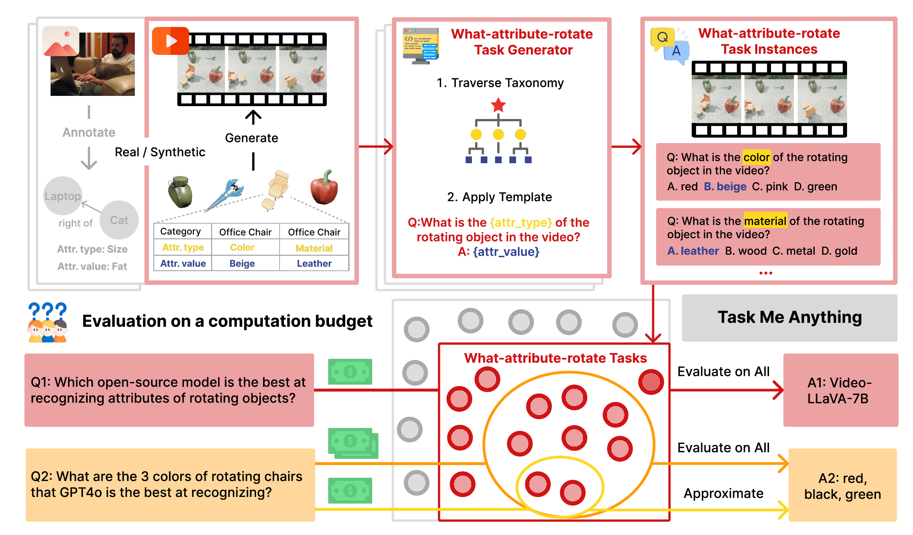

What is Task Me Anything?
A benchmark generation engine that generates benchmarks on-the-fly tailored to the user’s need for assessing multimodal language models like GPT-4o

The top part illustrates the task generation process with an example video synthesized with 3D objects and their annotations,
and the task generator for generating questions about rotating objects' attributes.
The bottom part depicts the model evaluation process, which selects the relevant tasks based on the user's query and their budget and
performs either full evaluation or results approximation to answer the query.